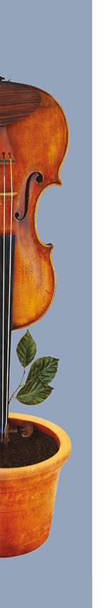
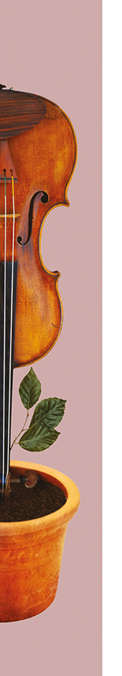
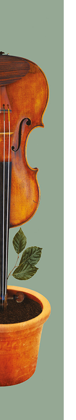
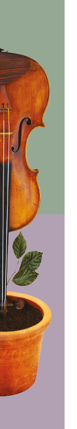
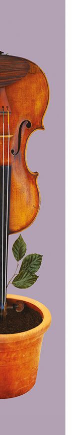
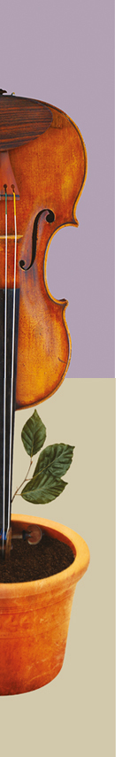

1ERS VIOLONS

Vincent Bardy
VINCENT BARDY
Vincent Bardy fait ses études de violon au Conservatoire de Clermont-Ferrand et au Conservatoire de Rueil-Malmaison où il obtient une médaille d’or.
Titulaire du D.E. il est enseignant au Conservatoire de Moulins.
Membre de l’O.S.D. depuis 1996.
Blaise Pourreyron
BLAISE POURREYRON
Blaise Pourreyron obtient une médaille d’or de violon puis le D.E.M. au C.N.R. de Clermont-Ferrand en 1993.
Il est professeur titulaire de violon à l’École Municipale de Musique de Riom depuis 1995.
Membre de l’O.S.D. depuis 1997.
Hélène Cantat
HÉLÈNE CANTAT
Hélène Cantat fait ses études de violon au C.N.R. de Clermont-Ferrand où elle obtient une médaille d’or en 1986.
Élève de Jean-Jacques Kantorow et Ivry Gitlis, elle obtient en 1989 une licence de concertiste à l’École Normale de Paris.
Elle enseigne le violon à l’ École de Musique d’Aubière.
Membre de l’O.S.D. depuis 2003.
Katheleen Monpertuis
KATHLEEN MONPERTUIS
Katheleen Monpertuis a effectué ses études de violon aux Pays-Bas où elle a obtenu ses diplômes d’enseignante et de violoniste professionnelle.
Membre de plusieurs ensembles en tant que violoniste ou altiste, elle est titulaire du D.E. depuis 1996
Membre de l’O.S.D depuis 2002.
Angéline Bernardi
ANGÉLINE BERNARDI
Après avoir obtenu un D.E.M. de violon au Conservatoire de
Clermont-Ferrand, Angéline Bernardi poursuit ses études au Conservatoire de Vichy où elle obtient une médaille d’or en violon et en alto.
Elle enseigne depuis à l’École de Musique des Martres-de-Veyre.
Membre de l’O.S.D. depuis 2001.
Stéphanie Gentilhomme
Stéphanie Gentilhomme
Stéphanie Gentilhomme, a fait ses études de Violon au Conservatoire de Toulouse, de Rouen et de Clermont-Ferrand
Elle obtient son D.E.M. en 1996
Titulaire du diplôme d'Etat, elle enseigne le violon , au Conservatoire de Musique et Danse d’Aurillac (15).
Elle se produit aussi bien dans diverses formations classiques que dans d’autres répertoires.
Membre de l’OSD de 1996 à 1999 et depuis 2019
Benoît Joseph
BENOÎT JOSEPH
Violoniste amateur, BenoÎt Joseph a fait son apprentissage à Clermont-Ferrand au sein de l’Orchestre Universitaire puis à Paris où il a rejoint le Chœur et Orchestre des Grandes Écoles et l’Orchestre Note & Bien sous la direction de François-Xavier Roth.
Membre de l’O.S.D depuis 2011
Anaïs Mecenero
ANAÏS MECENERO
Anaïs Mecenero commence ses études de violon au C.R.R. de Dijon dans la classe d'Anne Mercier et les achève au C.R.R. de Clermont-Ferrand où elle obtient un D.E.M mention TB à l'unanimité.
Titulaire du D.E, elle enseigne le violon et l'alto à l'école de musique d'Ennezat.
Elle est membre de l'ensemble "Acid Quintet".
Membre de l’O.S.D. depuis 2013.
2NDS VIOLONS
Elzbieta Gladys
ELZBIETA GLADYS
Diplômée de l’Université de Musique Frédéric Chopin de Varsovie,
Elzbieta Gladys est l’un des membres fondateurs du Quatuor
Prima Vista. Elle enregistre plusieurs CD et participe à de nombreuses créations, notamment des ciné-concerts.
Elle se produit régulièrement sur scène aussi bien dans des formations classiques que dans d’autres répertoires.
Membre de l’O.S.D. depuis 2010.
François Dragon
FRANÇOIS DRAGON
Élève de Pierre Amoyal, François Dragon a fait ses études de violon au Conservatoire National de Musique du Havre où il obtient son D.E.M.
Il participe à plusieurs formations orchestrales et enseigne le violon à Ussel et à l’École de Musique d’Aulnat.
Membre de l’O.S.D. depuis 2000.

Émilie Ferreira
ÉMILIE FERREIRA
Émilie Ferreira a étudié au Conservatoire de Clermont-Ferrand et à l’École Nationale de Musique de Villeurbanne où elle a obtenu les meilleurs diplômes.
Professeur dans les Écoles de musique de Ceyrat et Gerzat, elle pratique le violon dans différentes formations.
Membre de l’O.S.D. depuis 2008.
Stéphanie Joaquim
Marie-Aude Robin
STÉPHANIE JOAQUIM
Après avoir obtenu le D.E.M. en Violon au CRR de Nancy, Stéphanie JOAQUIM s’est orientée vers un cursus musical universitaire au CFMI de Sélestat, où elle obtient en 2002 le Diplôme Universitaire de Musicien Intervenant (DUMI).
Lors de ses premières expériences professionnelles en région parisienne, elle se perfectionne dans la gestion de projets artistiques en direction du jeune public.
En 2009 elle évolue professionnellement en Bourgogne en occupant le poste d’Adjoint de Direction et d’Enseignante Artistique au sein de l’Ecole de Musique de Tournus.
Depuis son arrivée dans le Puy de Dôme en 2020, elle est directrice de l’Ecole de Musique et du Pôle Culturel de la Ville d’Aulnat
Membre de l’O.S.D. depuis 2021.
MARIE-AUDE ROBIN
Après des études de violon et d’alto au conservatoire de
Clermont-Ferrand et de Vichy, Marie-Aude Robin a validé une licence de musicologie à Paris.
Depuis 2004 elle enseigne la musique dans différentes structures scolaires et associatives de l’agglomération clermontoise, et joue dans plusieurs formations orchestrales.
Membre de l’O.S.D. depuis 2004.
Nadia Kuentz
NADIA KUENTZ
Nadia Kuentz a fait ses études musicales au C.N.R. de Lyon puis au Conservatoire Supérieur de Musique de Genève, études qu’elle complète dans la classe de Violon baroque de Simon HEYRICK
à l’E.N.M. de Villeurbanne.
Elle participe dès lors aux grands Orchestres de la Région Rhône Alpes et se produit comme chambriste dans diverses formations.
Membre de l’O.S.D. depuis 2016.
Franziska Fischer
FRANZISKA FISCHER
Franziska Fischer a fait ses études en Allemagne au Conservatoire à Rayonnement Régional de Schwerin où elle obtient les meilleurs résultats.
Depuis son arrivée en Auvergne, elle participe à plusieurs formations orchestrales.
Membre de l’O.S.D. depuis 2010.
EMILIE POTTIEZ
Emilie Pottiez a effectué ses études de violon à l'Ecole de Musique de Neufchâteau dans les Vosges. Elle a intégré plusieurs formations orchestrales à Nancy, Paris et Clermont-Ferrand.
Musicienne amateur, Emilie est ingénieur en Supply Chain.
Membre de l’O.S.D. depuis 2016.
ALTOS

Margaux Aubert-Charrier
Tomoko Ono
MARGAUX AUBERT-CHARRIER
Margaux Aubert-Charrier a étudié le violon et l’alto au C.R.D. du Puy-en-Velay puis au C.R.R. de Lyon où elle obtient son D.E.M. en 2013. Elle termine ses études à la Haute Ecole de Musique de Genève en 2017 dans la classe d’alto d’Ori Kam.
Elle enseigne le violon au Conservatoire André Messager de Montluçon.
Membre de l’O.S.D. depuis 2021.
TOMOKO ONO
Tomoko Ono a fait ses études de musique en violon et alto au Japon. Elle est diplômée de la Toho-Gakuen Université et de l’École Normal de Musique de Paris.
Elle participe à plusieurs formations dont le Quatuor de
Clermont-Ferrand et enseigne aux Conservatoires de Thiers,
de Cournon-d’Auvergne et de Royat.
Membre de l’O.S.D. depuis 2002.
Damien Calatayud
DAMIEN CALATAYUD
Damien obtient son diplôme de Master au conservatoire supérieur de Lyon en 2018. Depuis, il s'oriente principalement vers la pratique orchestrale et participe à de prestigieux festival (Bayreuth, la Chaise-Dieu, Musethica, musique en Ré…). Il a aussi l'occasion de travailler régulièrement avec l'orchestre national de Lyon, l'Opéra de Lyon et les ensembles “Symphonique Loire Forez” et “Les Siècles Romantiques”.
En parallèle, il exerce un travail poussé en musique de chambre avec le quatuor Safran et se produit régulièrement aux côtés de musiciens de renommée internationale tels que Sarah Nemtanu, Pierre Fouchenneret ou Romain Descharmes.
En parallèle, il exerce un travail poussé en musique de chambre avec le quatuor Safran et se produit régulièrement aux côtés de musiciens de renommée internationale tels que Sarah Nemtanu, Pierre Fouchenneret ou Romain Descharmes.
Membre de l’O.S.D. depuis 2020.
Christine Griffon
CHRISTINE GRIFFON
Après avoir obtenu son prix d’alto au C.N.R. de Clermont-Ferrand, ainsi qu’une médaille d’or en Musique de Chambre, Christine Griffon a enseigné son instrument pendant de nombreuses années à l’École de Musique de Riom.
Elle pratique désormais l’alto en tant que musicien amateur.
Membre de l’O.S.D. depuis 1984.
Hélène Jamet
HÉLÈNE JAMET
Hélène Jamet termine ses études d’alto au C.N.S.M. de Lyon où elle obtient son prix en juin 1989.
Elle entre ensuite comme altiste dans l’Orchestre Symphonique de Sydney dans lequel elle jouera pendant dix ans.
Elle a également joué avec l’Orchestre Français des Jeunes,
l’Orchestre d’Auvergne, l’Orchestre de l’Opéra de Lyon, l’Orchestre National de Lyon et l’Orchestre de la Radio de Turin.
Membre de l’O.S.D. depuis 2010.
CÉCILE BOUQUET
Cécile Bouquet a suivi ses études de violon aux C.N.R. de
Clermont-Ferrand et d’Orléans où elle a obtenu les meilleurs diplômes.
Elle joue dans diverses formations de la région et enseigne le
violon à l’École de Musique de Beaumont.
Membre de l’O.S.D. depuis 2000.
Cécile Bouquet
Laurence LOYEZ
LAURENCE LOYEZ
Laurence Loyez débute le violon à l’âge de 6 ans. C’est lors de ses étude au conservatoire de Clermont-Ferrand qu’elle commence à ouvrir sa pratique à la musique de chambre, la musique baroque et la musique du monde. Passionnée par l’orchestre, elle débute l’alto en parallèle. Elle considère cet
éclectisme comme un des éléments les plus enrichissant de sa pratique musicale comme dans les rencontres qu’il permet. C’est aussi un aspect qu’elle défend pédagogiquement au sein de son activité d’enseignante du violon au conservatoire de Vichy
Membre de l’O.S.D. depuis 2011.
VIOLONCELLES
Alexandre Peronny
ALEXANDRE PÉRONNY
Alexandre Peronny obtient ses diplômes en violoncelle et
musique de chambre aux C.R.R. de Clermont-Ferrand et de
Rueil-Malmaison.
Son goût prononcé pour l’éclectisme, l’amène à travailler sur des projets d’esthétiques diverses.
Membre de l’O.S.D. depuis 2005.

ANNE-LAURE BARBARIN
Diplômée du C.R.R. de Bourges, Anne-Laure Barbarin se spécialise en violoncelle baroque au C.R.D. de Villeurbanne dans la classe d’Hilary Metzger.
Elle se produit régulièrement dans divers orchestres et ensembles de musique de chambre .
Titulaire du diplôme d’État, elle enseigne le violoncelle dans les Écoles de Musique d’Aubière et de Beaumont.
Membre de l’O.S.D. depuis 2013.
Anne-Laure Barbarin
LIONEL MICHEL
Lionel Michel a étudié le violoncelle avec A. Fabre, G. Teulières et M. Strauss. Il s’est perfectionné auprès de J. Starker et A. Parisot. Diplômé du C.N.S.M.D. de Paris en Analyse, Harmonie et Contrepoint, il réalise de multiples arrangements. Professeur au Conservatoire de Clermont-Ferrand, il initie des collaborations interdisciplinaires originales autour de la musique de chambre ainsi que pour grands ensembles tels que les 100 violoncelles d’Auvergne.
Membre de l’O.S.D. depuis 2022.
Lionel Michel

Camille Falipou
CAMILLE FALIPOU
Après des études auprès de F. Baduel et P. Gabard, Camille Falipou s’est perfectionnée avec V. Marin, Y. Chiffoleau et R. Pidoux. Lors de ses études musicales, Camille est appelée à jouer en soliste avec l’orchestre national de Moldavie (2003), et obtient en 2005 le trophée d’Or du concours Enfants du monde.
Elle se produit également dans diverses formations orchestrales européenne.
Depuis son arrivée en Auvergne en tant que professeur de violoncelle au CRD de Vichy communauté, Camille participe à la vie musicale de sa région d’adoption, par des concerts de musique de chambre (trio, quatuor), ou en tant que soliste
Membre de l’O.S.D. depuis 2020.
Carole Chapeau
CAROLE CHAPEAU
Carole Chapeau obtient en 2007 le DEM de violoncelle au C.R.R. de Limoges et en 2008 celui de musique de chambre au C.R.R. de Poitiers. Elle poursuit ses études à l’Université de Poitiers, où elle est diplômée en 2012 de la Licence de Musicologie, et au C.E.S.M.D. de Poitou - Charentes, du D.N.S.P.M. et du D.E. de Violoncelle.
Elle enseigne depuis une quinzaine d'années dans différents conservatoires et écoles de musique, notamment dans le Puy -de -Dôme.
Elle enseigne depuis une quinzaine d'années dans différents conservatoires et écoles de musique, notamment dans le Puy -de -Dôme.
Elle est membre du “Trio Ars Viva”.
Membre de l’O.S.D. depuis 2021.
Anne Sniehotta
Wendy Schottman
ANNE SNIEHOTTA
Anne Sniehotta a fait ses études au C.R.R. de Clermont-Ferrand puis au conservatoire de Cournon où elle obtient son D.E.M.
Elle joue régulièrement dans différentes formations musicales.
Musicienne amateur, Anne est assistante sociale en hospitalisation à domicile.
Membre de l’O.S.D. depuis 2009.
WENDY SCHOTTMAN
Wendy Schottman est d’origine américaine et a étudié le
violoncelle par le biais de cours privés avec divers professeurs aux États-Unis et en France.
Enseignante de linguistique anglaise à l’Université Blaise Pascal, elle participe à plusieurs formations de Musique de Chambre.
Membre de l’O.S.D. depuis 1987.
CATHERINE MARIE-CATHERINE
Parallèlement à des études de musicologie à la Sorbonne, Catherine Marie-Catherine étudie le violoncelle à l’École Nationale de Musique de Meudon avec Claude Maindive.
Professeur de violoncelle à Issoire de 2003 à 2013, elle est
aujourd’hui professeur de musique en collège à Billom.
Membre de l’O.S.D. depuis 2013.
Catherine Marie-Catherine
CONTREBASSES
EMMANUEL JARROUSSE
Emmanuel Jarrousse commence l’étude de la musique à Busan en Corée du sud.
Titulaire du D.E.M., il est Professeur Diplômé d’État et enseigne la contrebasse et la musique actuelle au Conservatoire de Riom.
Son répertoire va de la musique classique aux musiques
improvisées.
Membre de l’O.S.D. depuis 2000.
Emmanuel Jarrousse

DANIEL GRIMONPREZ
Daniel Grimonprez est professeur de contrebasse au conservatoire de Vichy Val d’Allier. Il participe à de nombreux projets en musique de chambre ou symphonique, mais également en musique klezmer, tango et jazz.
Il dirige l’Orchestre Symphonique de Vichy.
Membre de l’O.S.D. depuis 1984.
Daniel Grimonprez
JEAN-FRANÇOIS TREIG
Jean-François Treig a fait ses études de contrebasse au
Conservatoire de Perpignan où il obtient les meilleurs diplômes.
Il enseigne à l’École de Musique de Pont-du-Château
et à Beaumont.
Membre de l’O.S.D. depuis 2013.
Jean-François Treig